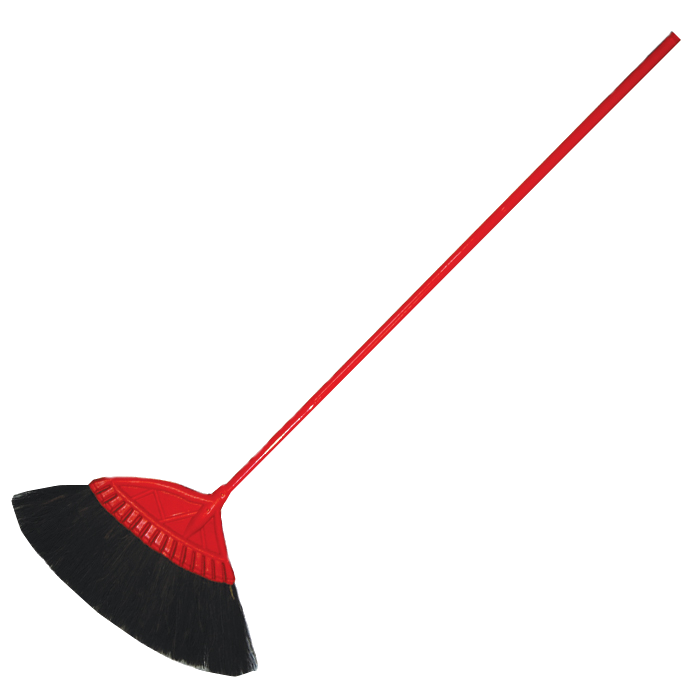
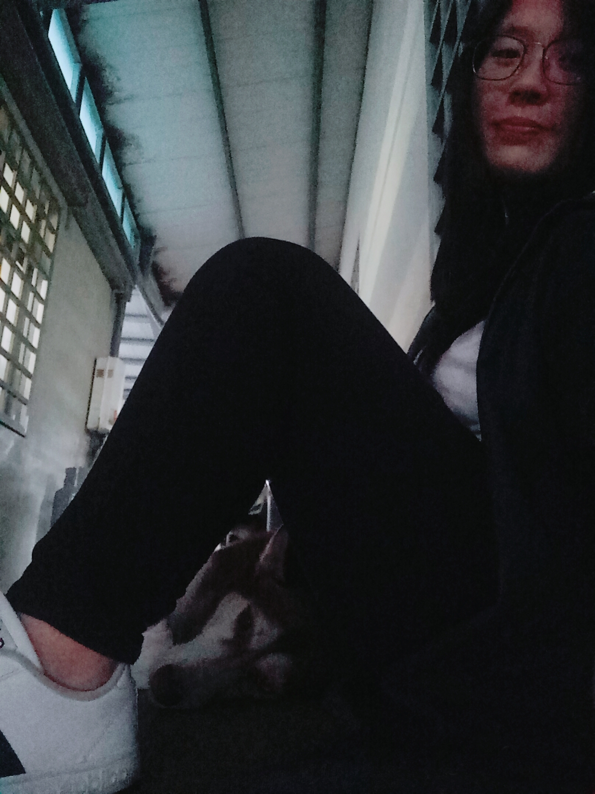

One day mom told me there was a woman who is finding a person to adapt her husky, because she was being pregnant and she cannot afford the expenses two dogs, so I we decided to visit the woman's house. The husky's name is "Gabi", and she doesn't really well on her skin, maybe her owner seldom take a bath with her. She also has a bad habit too, drinking toilet water was what mom saw in the woman's house, and Gabi will afraid of broom, because the woman used to punish her by broom.
In April 30, 2015, the first time I saw her was on my phone, I received a picture from my mom after school, and I was really shocked that mom truly adapt her!
I share this joy with my friends and they all feel jealous on me. I will never forget it.
 When we adapte her, we took her to have a physical examination, and found
out her skin problems, then follow doctor's instruction to heal her. I remembered that she need to take medicine after every meal, and it is really hard to fed
her with only medicine. You need to mix it with food she like such as bread and Baozi, also you cannot do this process in fron tof her because she is really
clever to pick the medicine out and eat the food....But this is just a period to recognize her and take care of her, now she is really healthy with
a thirty something kilograms and live well now.
When we adapte her, we took her to have a physical examination, and found
out her skin problems, then follow doctor's instruction to heal her. I remembered that she need to take medicine after every meal, and it is really hard to fed
her with only medicine. You need to mix it with food she like such as bread and Baozi, also you cannot do this process in fron tof her because she is really
clever to pick the medicine out and eat the food....But this is just a period to recognize her and take care of her, now she is really healthy with
a thirty something kilograms and live well now.
